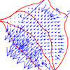
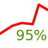

-
Harmon, B. A., Petrasova, A., Petras, V., and Mitasova, H., 2016,
Computational Landscape Architecture:
Procedural, Tangible, and Open Landscapes.
In: J. R. Anderson & D. Ortega (Eds.),
Innovations in Landscape Architecture. Routledge.
With emerging technologies we can begin to intuitively model
and creatively design dynamic, evolving landscapes. Advances in
geospatial modeling, remote sensing, rapid prototyping, and 3d
scanning are changing the way that landscapes are modeled. Now
we can generate dynamic landscape form with process-based
scientific models. We can build precise physical models using
remote sensing and rapid prototyping. And we can link physical
and digital models with real-time 3d scanning. Our new
technology - Tangible Landscape - enables designers to
intuitively sculpt a physical model of a landscape coupled with
a digital model in a real-time feedback loop of 3d scanning,
geospatial modeling, and projection. This bridges the
digital-analog divide by combining the embodied, kinæsthetic
creativity of traditional modes of design with the analytics
and procedural dynamism of geospatial modeling. Since Tangible
Landscape seamlessly integrates geospatial modeling, analysis,
and simulation into the design process designers can assess the
performance of landscapes and quantitatively explore the impact
of their designs. Tangible Landscape’s real-time analytics
enable designers to rapidly iterate through design ideas while
rigorously testing their ideas.
-
Jeziorska, J.; Mitasova, H.; Petrasova, A.; Petras, V.; Divakaran, D.; Zajkowski, T., 2016,
Overland flow analysis using time series of sUAS-derived elevation models,
ISPRS Annals.
With the advent of the
innovative techniques for generating high temporal and spatial
resolution terrain models from Unmanned Aerial Systems (UAS) imagery,
it has become possible to precisely map overland flow patterns.
Furthermore, the process has become more affordable and efficient
through the coupling of small UAS (sUAS) that are easily deployed with
Structure from Motion (SfM) algorithms that can efficiently derive 3D
data from RGB imagery captured with consumer grade cameras. We propose
applying the robust overland flow algorithm based on the path sampling
technique for mapping flow paths in the arable land on a
small test site in Raleigh, North Carolina. By comparing a time series
of five flights in 2015 with the results of a simulation based on the
most recent lidar derived DEM (2013), we show that the sUAS based data
is suitable for overland flow predictions and has several advantages
over the lidar data. The sUAS based data captures preferential flow
along tillage and more accurately represents gullies. Furthermore the
simulated water flow patterns over the sUAS based terrain models are
consistent throughout the year. When terrain models are reconstructed
only from sUAS captured RGB imagery, however, water flow modeling is
only appropriate in areas with sparse or no vegetation cover.
-

Petras, V., Mitasova, H., Petrasova, A., 2015.
Mapping gradient fields of landform migration.
In: Jaroslaw, J., Zwolinski, Z., Mitasova, H., Hengl, T.
Geomorphometry for Geosciences.
Bogucki Wydawnictwo Naukowe, Adam Mickiewicz University in Poznan
– Institute of Geoecology and Geoinformation.
Poznan, Poland.
ISBN: 978-83-7986-059-3
Geospatial analytics techniques describing changes of
unstable landscapes provide critical information for hazard
management and mitigation. We propose a method for
quantifying horizontal migration of complex landforms based
on the analysis of contour evolution. When applied to a set
of elevations this technique provides comprehensive
information on magnitude and direction of landform migration
at any point in space and time. The method is based on the
concept of space-time cube combined with GIS-based analysis
applied to spatio-temporal surface. The result of the
analysis is a vector field representing the movement and
deformation of contours. We also present several approaches
to visualization of these vector fields as space-time
gradient lines, vectors or dynamic ”comets”. We demonstrate
the method on a laboratory model and an elevation time series
capturing evolution of a coastal sand dune.
-
Petras, V., Petrasova, A., Harmon, B., Meentemeyer, R.K., Mitasova, H.
Integrating Free and Open Source Solutions into Geospatial Science Education.
ISPRS International Journal of Geo-Information. 2015, 4, 942-956.
doi:10.3390/ijgi4020942
While free and open source software becomes increasingly
important in geospatial research and industry, open science
perspectives are generally less reflected in universities’
educational programs. We present an example of how free and
open source software can be incorporated into geospatial
education to promote open and reproducible science. Since
2008 graduate students at North Carolina State University
have the opportunity to take a course on geospatial modeling
and analysis that is taught with both proprietary and free
and open source software. In this course, students perform
geospatial tasks simultaneously in the proprietary package
ArcGIS and the free and open source package GRASS GIS. By
ensuring that students learn to distinguish between
geospatial concepts and software specifics, students become
more flexible and stronger spatial thinkers when choosing
solutions for their independent work in the future. We also
discuss ways to continually update and improve our publicly
available teaching materials for reuse by teachers,
self-learners and other members of the GIS community. Only
when free and open source software is fully integrated into
geospatial education, we will be able to encourage a culture
of openness and, thus, enable greater reproducibility in
research and development applications.
-
Petras, V., Petrasova, A., Mitasova, H. FOSS4G 2014.
Spatio-temporal data visualization in GRASS GIS: desktop and web solutions.
[unpublished]
Online publication of geospatial data is a common requirement of GIS users.
Several free and open source solutions are available. These solutions
include JavaScript libraries for building web map applications as well as
server-side applications for data publishing. This project aims at GIS
users which don't have an option to run a server-side applications
and cannot build web map applications easily. The project consists of
two loosely coupled parts where one or the other can be easily replaced by some other solution.
First part is a set of web map applications. Each of them is specialized to
different type of data, for example one application provides tools to
show spatio-temporal data. Second part is connected to GRASS GIS and
consists of a set of GRASS modules which provide several ways of
exporting different types of data from GRASS GIS. Besides maps, other
data such as statical values about maps are also exported. Connecting
exported data and web applications is as easy as putting the files into
the right directory. The solution enables easy publication without any
requirements on user or publication servers and is intended to be used
for ad hoc data sharing with colleagues which may or may not use GIS
but for sure will appreciate interactive data visualization including
additional information.
-
Petrasova, A., Harmon, B., Petras, V., Mitasova, H., 2014.
GIS-based environmental modeling with tangible interaction and dynamic visualization.
In: Ames, D.P., Quinn, N.W.T., Rizzoli, A.E. (Eds.),
Proceedings of the 7th International Congress on Environmental Modelling and Software,
June 15-19, San Diego, California, USA. ISBN: 978-88-9035-744-2
We present a new, affordable version of TanGeoMS, a
tangible geospatial modeling and visualization system
designed for collaboratively exploring how terrain change
impacts landscape processes. It couples a physical,
three-dimensional model of a landscape with geospatial
modeling and analysis through a cycle of scanning and
projection. Multiple users can modify the physical model
by hand while it is being scanned; by sculpting the model
they generate input for modeling of geophysical processes.
The modeling results are then visualized by projecting
images or animations back on the physical model. This
feedback loop is an intuitive way to evaluate the impacts
of different scenarios including anthropogenic and natural
landscape change. Integration with GRASS GIS, a free and
open source geographic information system, provides
TanGeoMS with a variety of easily accessible geospatial
analysis and modeling tools. To demonstrate the
environmental modeling applications of TanGeoMS, we will
demonstrate how development can be planned based on
feedback from landscape processes such as hydrologic
simulation and wildfire modeling with variable fuel
distribution.
-
Kratochvilova, K., Petras, V., 2012.
Quantum GIS plugin for Czech cadastral data.
In: Geoinformatics FCE CTU, Volume 8,
Prague, Czech Republic.
This paper presents new Quantum GIS plugin for Czech
cadastral data and its development. QGIS is a rapidly
developing cross-platform desktop Geographic Information
System (GIS) released under the GNU GPL. QGIS is written in
C++, and uses the Qt library. The plugin is developed in
C++, too. The new plugin can work with Czech cadastral data
in the new Czech cadastral exchange data format called VFK
(or NVF). Data are accessed through VFK driver of the OGR
library. The plugin should facilitate the work with
cadastral data by easy search and presenting well arranged
information. Information is displayed in the way similar to
web applications, thus the control is friendly and familiar
for users. The plugin supports interaction with map using
QGIS functionality and it is able to export various
cadastral reports. This paper provides ideas which can be
generalized to develop QGIS plugin dealing with specific
data.
-

Petras, V., 2011.
Implementation of SQLite database support in program gama-local.
In: Geoinformatics FCE CTU, Volume 7,
Prague, Czech Republic.
The program gama-local is a part of GNU Gama project and
allows adjustment of local geodetic networks. Before
realization of this project the program gama-local
supported only XML as an input. I designed and implemented
support for the SQLite database and thanks to this
extension gama-local can read input data from the SQLite
database. This article is focused on the specifics of the
use of callback functions in C++ using the native SQLite
C/C++ Application Programming Interface. The article
provides solution to safe calling of callback functions
written in C++. Callback functions are called from C
library and C library itself is used by C++ program.
Provided solution combines several programing techniques
which are described in detail, so this article can serve as
a cookbook even for beginner programmers. This project was
accomplished within my bachelor thesis.
-
Petras, V.; Petrasova, A.; Jeziorska, J.; Mitasova, H., 2016,
Processing UAV and lidar point clouds in GRASS GIS,
ISPRS Archives.
Today's methods of acquiring Earth surface data, namely lidar
and unmanned aerial vehicle (UAV) imagery, non-selectively
collect or generate large amounts of points. Point clouds from
different sources vary in their properties such as number of
returns, density, or quality. We present a set of tools with
applications for different types of points clouds obtained by a
lidar scanner, structure from motion technique (SfM), and a
low-cost 3D scanner. To take advantage of the vertical
structure of multiple return lidar point clouds, we demonstrate
tools to process them using 3D raster techniques which allow,
for example, the development of custom vegetation
classification methods. Dense point clouds obtained from UAV
imagery, often containing redundant points, can be decimated
using various techniques before further processing. We
implemented and compared several decimation techniques in
regard to their performance and the final digital surface model
(DSM). Finally, we will describe the processing of a point
cloud from a low-cost 3D scanner, namely Microsoft Kinect, and
its application for interaction with physical models. All the
presented tools are open source and integrated in GRASS GIS, a
multi-purpose open source GIS with remote sensing capabilities.
The tools integrate with other open source projects,
specifically Point Data Abstraction Library (PDAL), Point Cloud
Library (PCL), and OpenKinect libfreenect2 library to benefit
from the open source point cloud ecosystem. The implementation
in GRASS GIS ensures long term maintenance and reproducibility
by the scientific community but also by the original authors
themselves.
-
Petrasova, A., Petras, V., Van Berkel, D., Harmon, B. A.,
Mitasova, H., Meentemeyer, R. K., 2016,
Open source approach to urban growth simulation,
ISPRS Archives.
-
Harmon, B. A., Petrasova, A., Petras, V., Mitasova, H., Meentemeyer, R. K., 2016,
Spatial cognition in tangible computing,
ISPRS Archives.
-

Petrasova, A., Petras, V., Van Berkel, D., Harmon, B. A.,
Mitasova, H., Meentemeyer, R. K., 2016,
Open source approach to urban growth simulation,
ISPRS Archives.
Many valuable models and tools developed by scientists are
often inaccessible to their potential users because of
non-existent sharing infrastructure or lack of documentation.
Case in point is the FUTure Urban-Regional Environment
Simulation (FUTURES), a patch-based land change model for
generating scenario-based regional forecasts of urban growth
pattern. Despite a high-impact publication, few scientists,
planners, or policy makers have adopted FUTURES due to
complexity in use and lack of direct access. We seek to address
these issues by integrating FUTURES into GRASS GIS, a free and
open source GIS and research platform for geospatial domain.
This integration will enable us to take advantage of GRASS GIS
tools for landscape structure analysis, and thus eliminate the
need to use proprietary software for data preprocessing.
Moreover, integration into GRASS GIS simplifies the
distribution of FUTURES across all main operating systems and
ensures maintainability of our project in the future. We will
present our use case of integrating this advanced land change
model into GRASS GIS platform and discuss the current state of
the integration as well as the planned steps to achieve our
vision of simple-to-use and fully free and open source FUTURES.
-
Petras, V., Petrasova, A., Chemin, Y.,
Zambelli, P., Landa, M., Gebbert, S., Neteler, M., Loewe, P.
EGU 2015.
Analyzing rasters, vectors and time series using new Python interfaces in GRASS GIS 7.
(abstract,
PDF)
GRASS GIS 7 is a free and open source GIS software
developed and used by many scientists (Neteler et al.,
2012). While some users of GRASS GIS prefer its graphical
user interface, significant part of the scientific
community takes advantage of various scripting and
programing interfaces offered by GRASS GIS to develop new
models and algorithms. Here we will present different
interfaces added to GRASS GIS 7 and available in Python, a
popular programming language and environment in
geosciences. These Python interfaces are designed to
satisfy the needs of scientists and programmers under
various circumstances. PyGRASS (Zambelli et al., 2013)
is a new object-oriented interface to GRASS GIS
modules and libraries. The GRASS GIS libraries are
implemented in C to ensure maximum performance and the
PyGRASS interface provides an intuitive, pythonic access to
their functionality. GRASS GIS Python scripting library is
another way of accessing GRASS GIS modules. It combines the
simplicity of Bash and the efficiency of the Python syntax.
When full access to all low-level and advanced functions
and structures from GRASS GIS library is required, Python
programmers can use an interface based on the Python ctypes
package. Ctypes interface provides complete, direct access
to all functionality as it would be available to C
programmers. GRASS GIS provides specialized Python library
for managing and analyzing spatio-temporal data (Gebbert
and Pebesma, 2014). The temporal library introduces space
time datasets representing time series of raster, 3D raster
or vector maps and allows users to combine various
spatio-temporal operations including queries, aggregation,
sampling or the analysis of spatio-temporal topology. We
will also discuss the advantages of implementing scientific
algorithm as a GRASS GIS module and we will show how to
write such module in Python. To facilitate the development
of the module, GRASS GIS provides a Python library for
testing (Petras and Gebbert, 2014) which helps researchers
to ensure the robustness of the algorithm, correctness of
the results in edge cases as well as the
detection of changes in results due to new
development. For all modules GRASS GIS automatically
creates standardized command line and graphical user
interfaces and documentation. Finally, we will show how
GRASS GIS can be used together with powerful Python tools
such as the NumPy package and the IPython Notebook.
-
Chemin, Y., Petras, V., Petrasova, A., Landa, M., Gebbert, S.,
Zambelli, P., Markus Neteler (6), Peter Loewe, Di Leo, M.
EGU 2015.
GRASS GIS: a peer-reviewed scientific platform and future research repository.
(abstract,
PDF)
Geographical Information System (GIS) is known for its
capacity to spatially enhance the management of natural
resources. While being often used as an analytical tool,
it also represents a collaborative scientific platform to
develop new algorithms. Thus, it is critical that GIS
software as well as the algorithms are open and accessible
to anybody. We present how GRASS GIS, a free and open
source GIS, is used by many scientists to implement and
perform geoprocessing tasks. We will show how integrating
scientific algorithms into GRASS GIS helps to preserve
reproducibility of scientific results over time.
Moreover, subsequent improvements are tracked in the
source code version control system and are immediately
available to the public. GRASS GIS therefore acts as a
repository of scientific peer-reviewed code, algorithm
library, and knowledge hub for future generation of
scientists. In the field of hydrology, with the various
types of actual evapotranspiration (ET) models being
developed in the last 20 years, it becomes necessary to
inter-compare methods. Most of already published ETa
models comparisons address few number of models, and small
to medium areas. With the large amount
of remote sensing data covering the Earth, and the daily
information available for the past ten years (i.e.
Aqua/Terra-MODIS) for each pixel location, it becomes
paramount to have a more complete comparison, in space and
time. To address this new experimental requirement, a
distributed computing framework was designed, and created.
The design architecture was built from original
satellite datasets to various levels of processing until
reaching the requirement of various ETa models input
dataset. Each input product is computed once and reused in
all ETa models requiring such input. This permits
standardization of inputs as much as possible to zero-in
variations of models to the models
internals/specificities. All of the ET models are
available in the new GRASS GIS version 7 as imagery
modules and replicability is complete for future research.
A set of modules for multiscale analysis of landscape
structure was added in 1992 by Baker, who developed the
r.le model similar to FRAGSTATS. The modules were
gradually improved to become r.li in 2006. Further
development continued, with a significant speed up and
new interactive user interface. The development of spatial
interpolation module v.surf.rst started in 1988 and
continued by introduction of new interpolation methods and
finally full integration into GRASS GIS version 4.
Since then it was improved several times. The module
is an important part of GRASS GIS and is taught at
geospatial modeling courses, for example at North Carolina
State University. GRASS GIS entails several modules
that constitute the result of active research on natural
hazard. The r.sim.water simulation model for
overland flow under rainfall excess conditions was
integrated into the Emergency Routing Decision
Planning system as a WPS. It was also
utilized by Petrasova and is now part of Tangible
Landscape, a tangible GIS system, which also incorporated
the r.damflood, a dam break inundation simulation. The
wildfire simulation toolset, originally developed by Xu,
implementing Rothermel’s model, available through the
GRASS GIS modules r.ros and r.spread, is object of active
research. It has been extensively tested and recently
adapted to European fuel types.
-

Testing framework for GRASS GIS: ensuring reproducibility of scientific geospatial computing
Petras, V., Gebbert, S.
GRASS GIS, a free and open source GIS, is used by many
scientists directly or through other projects such as R or
QGIS to perform geoprocessing tasks. Thus, a large number
of scientific geospatial computations depend on quality and
correct functionality of GRASS GIS. Automatic functionality
testing is therefore necessary to ensure software
reliability. Here we present a testing framework for GRASS
GIS which addresses different needs of GRASS GIS and
geospatial software in general. It allows to test GRASS
tools (referred to as GRASS modules) and examine outputs
including large raster and vector maps as well as temporal
datasets. Furthermore, it enables to test all levels of
GRASS GIS architecture including C and Python application
programming interface and GRASS modules invoked as
subprocesses. Since GRASS GIS is used as a platform for
development of geospatial algorithms and models, the
testing framework allows not only to test GRASS GIS core
functionality but also tools developed by scientists as a
part of their research. Using testing framework we can test
GRASS GIS and related tools automatically and repetitively
and thus detect errors caused by code changes and new
developments. Tools and code are then easier to maintain
which results in preserving reproducibility of scientific
results over time. Similarly to open source code, the test
results are publicly accessible, so that all current and
potential users can see them. The usage of testing
framework will be presented on an example of a test suite
for r.slope.aspect module, a tool for computation of
terrain slope, aspect, curvatures and other terrain
characteristics.
[ePoster and abstract in program]
-

GRASS GIS Vector State of the Art — Gearing towards GRASS GIS 7
Metz, M., Landa, M., Petrasova, A., Petras, V., Chemin, Y., Neteler, M. and The GRASS GIS Development Team
Topology ensures that adjacent geographic components in a single vector map are related. In contrast to non-topological GIS, a border common to two areas exists only once and is shared between the two areas. Topological representation of vector data helps to produce and maintain vector maps with clean geometry as well as enables the user to perform certain analyses that can not be conducted with non-topological or spaghetti data. Non-topological vector data are automatically converted to a topological representation upon import. Further more, various cleaning tools exist to remove non-trivial topological errors.
In the upcoming GRASS GIS 7 release the vector library was particularly improved to make it faster and more efficient with an improved internal vector file format. This new topological format reduces memory and disk space requirements, leading to a generally faster processing. Opening an existing vector requires less memory providing additionally support for large files. The new spatial index performs queries faster (compared to GRASS GIS 6 more than 10 times for large vectors). As a new option the user can select a file-based version of the spatial index for large vector data. All topological cleaning tools have been optimized with regard to processing speed, robustness, and system requirements.
The vector engine comes with a new prototype for direct read/write support of OGR Simple Features API.
Additionally vector data can be directly exchanged with topological PostGIS 2 databases. This enables GRASS to read and write topological primitives beside native file-based format also to the topological PostGIS 2 databases.
Considering the wide spread usage of Esri Shapefile, a non-topological format for vector data exchange, it is particularly advantageous that GRASS GIS 7 offers advanced cleaning tools.
For power users and programmers, the new Python interface allows to directly access functions provided by the underlying C libraries; this combines the ease of writing Python scripts with the power of optimized C functionality in the library backend.
[PDF]